136 images
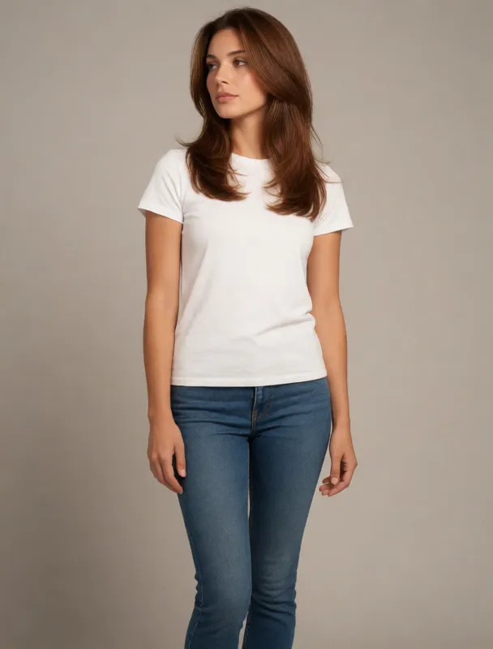
krea 2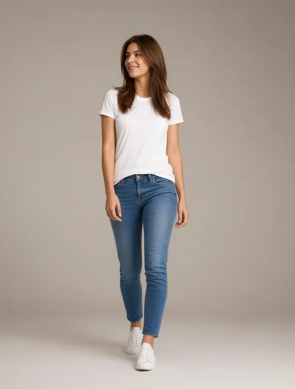
qwen image 2.1a full color full length fashion photograph in three-quarter view, with the whole body in frame from head to feet, lit by soft even studio light against a plain warm gray backdrop. the subject is a slim mixed race woman of about twenty five with light skin. her hair is chestnut brown, long blowout layers. she wears a plain white crew-neck t-shirt and blue jeans. she stands relaxed with her weight on one leg. she gazes off to the left side of the frame, away from the camera.
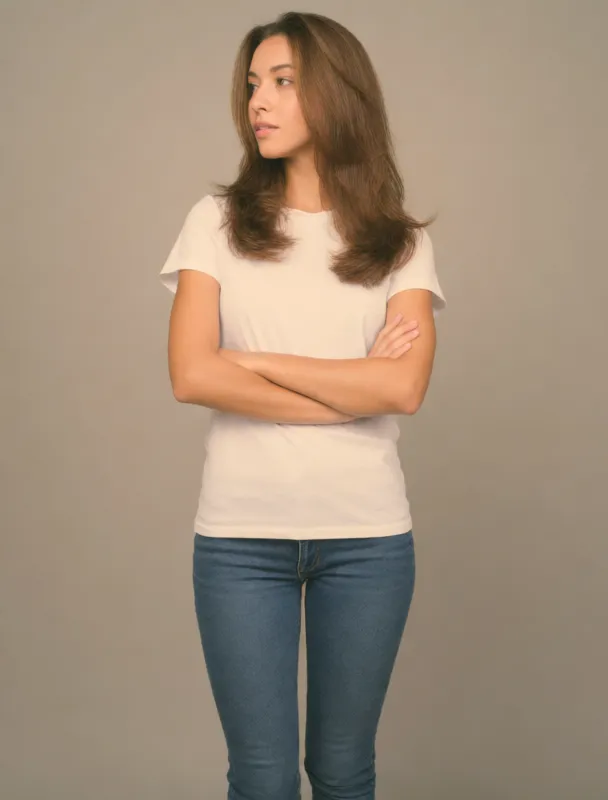
krea 2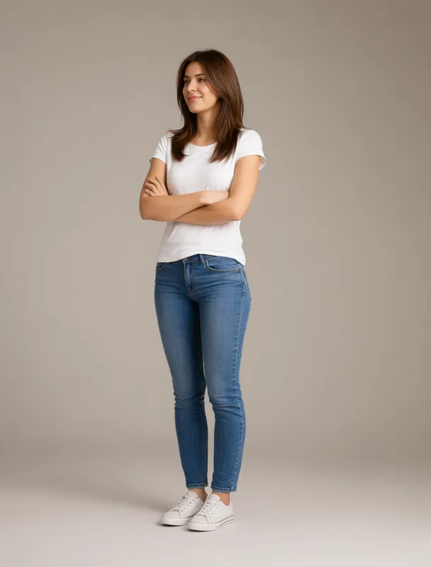
qwen image 2.1a full color full length fashion photograph in three-quarter view, with the whole body in frame from head to feet, lit by soft even studio light against a plain warm gray backdrop. the subject is a slim mixed race woman of about twenty five with light skin. her hair is chestnut brown, long blowout layers. she wears a plain white crew-neck t-shirt and blue jeans. she stands with her arms crossed. she gazes off to the left side of the frame, away from the camera.
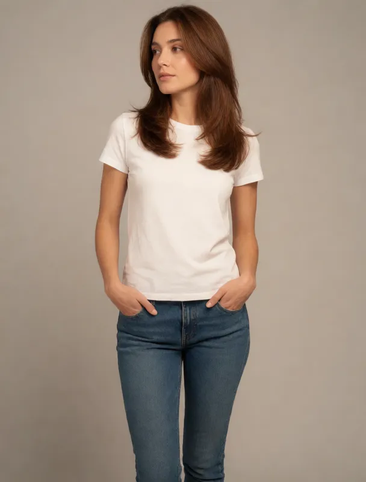
krea 2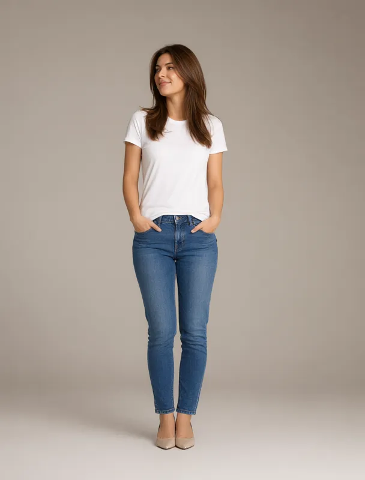
qwen image 2.1a full color full length fashion photograph in three-quarter view, with the whole body in frame from head to feet, lit by soft even studio light against a plain warm gray backdrop. the subject is a slim mixed race woman of about twenty five with light skin. her hair is chestnut brown, long blowout layers. she wears a plain white crew-neck t-shirt and blue jeans. she stands with her hands in her pockets. she gazes off to the left side of the frame, away from the camera.
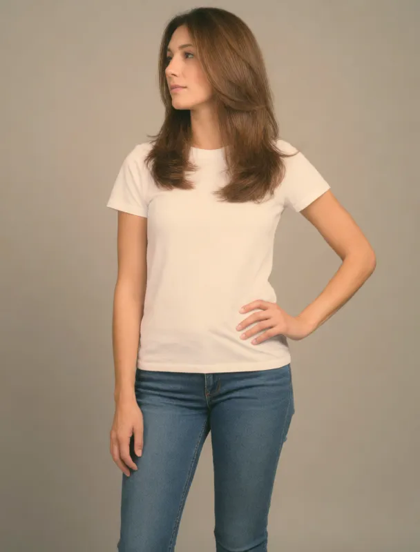
krea 2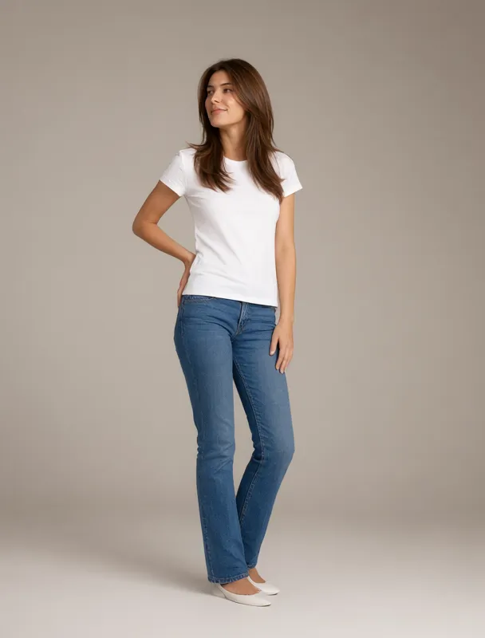
qwen image 2.1a full color full length fashion photograph in three-quarter view, with the whole body in frame from head to feet, lit by soft even studio light against a plain warm gray backdrop. the subject is a slim mixed race woman of about twenty five with light skin. her hair is chestnut brown, long blowout layers. she wears a plain white crew-neck t-shirt and blue jeans. she stands with one hand on her hip. she gazes off to the left side of the frame, away from the camera.
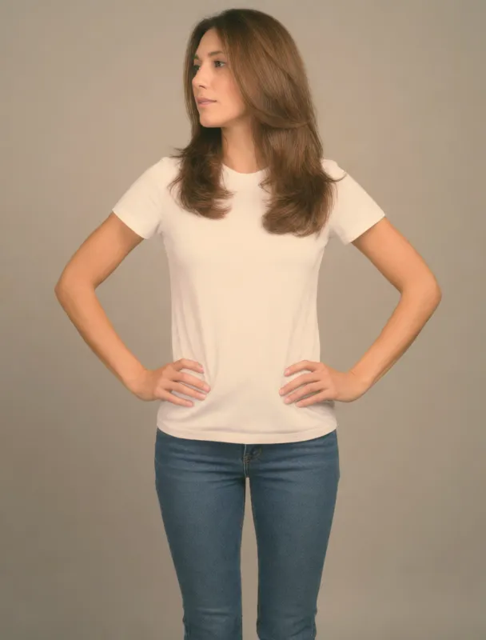
krea 2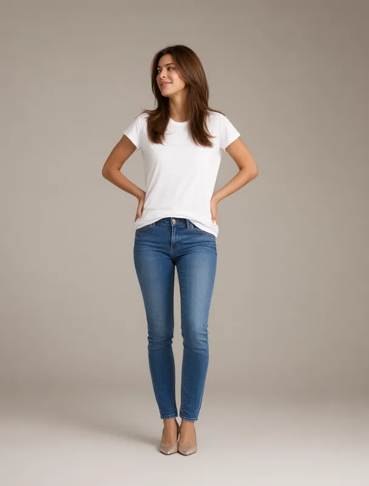
qwen image 2.1a full color full length fashion photograph in three-quarter view, with the whole body in frame from head to feet, lit by soft even studio light against a plain warm gray backdrop. the subject is a slim mixed race woman of about twenty five with light skin. her hair is chestnut brown, long blowout layers. she wears a plain white crew-neck t-shirt and blue jeans. she stands with both hands on her hips. she gazes off to the left side of the frame, away from the camera.
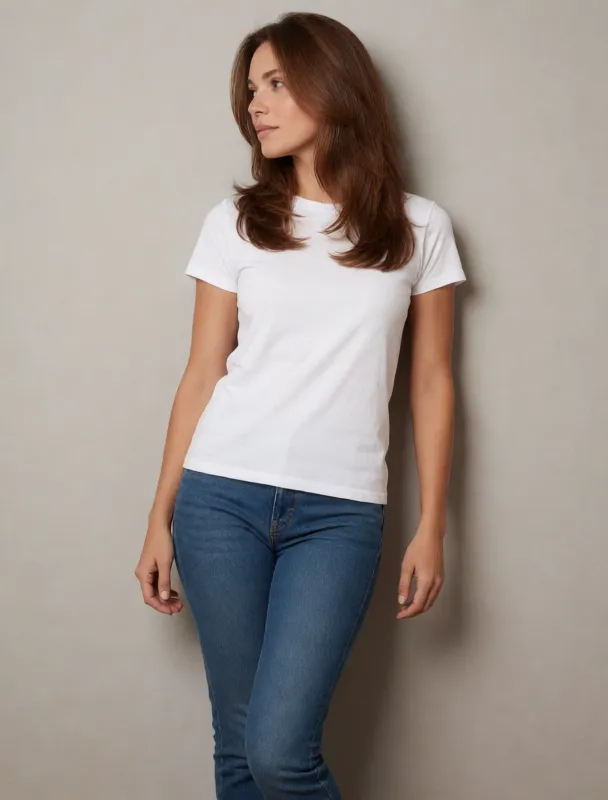
krea 2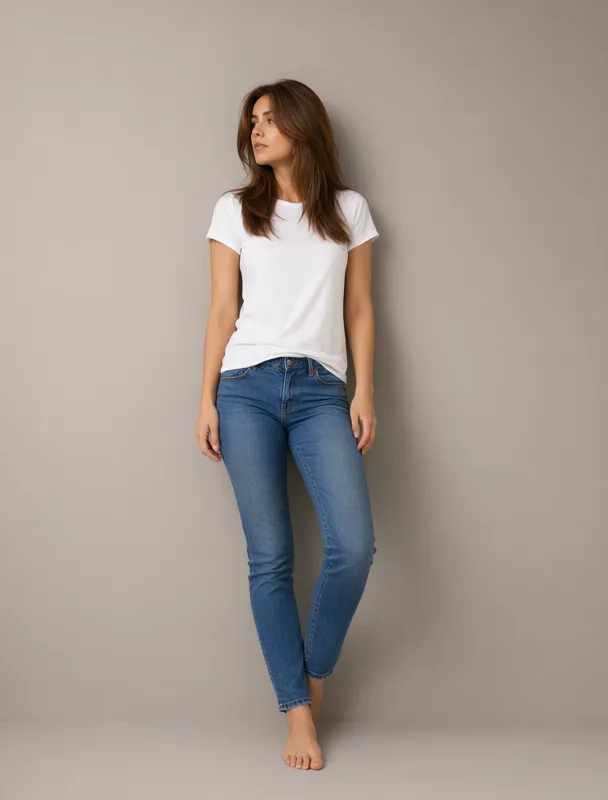
qwen image 2.1a full color full length fashion photograph in three-quarter view, with the whole body in frame from head to feet, lit by soft even studio light against a plain warm gray backdrop. the subject is a slim mixed race woman of about twenty five with light skin. her hair is chestnut brown, long blowout layers. she wears a plain white crew-neck t-shirt and blue jeans. she leans back against a wall. she gazes off to the left side of the frame, away from the camera.
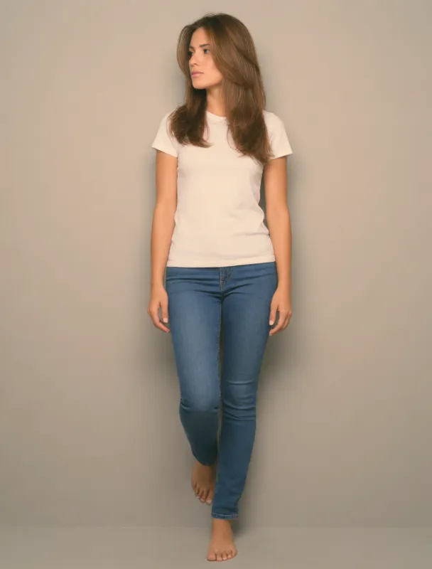
krea 2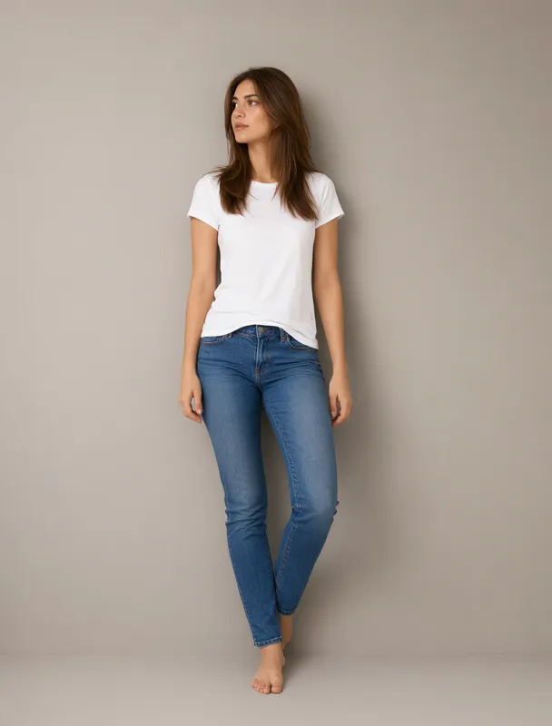
qwen image 2.1a full color full length fashion photograph in three-quarter view, with the whole body in frame from head to feet, lit by soft even studio light against a plain warm gray backdrop. the subject is a slim mixed race woman of about twenty five with light skin. her hair is chestnut brown, long blowout layers. she wears a plain white crew-neck t-shirt and blue jeans. she stands with one foot flat against the wall behind her. she gazes off to the left side of the frame, away from the camera.
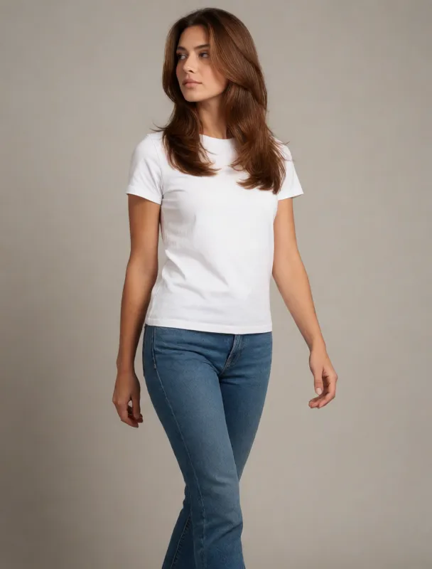
krea 2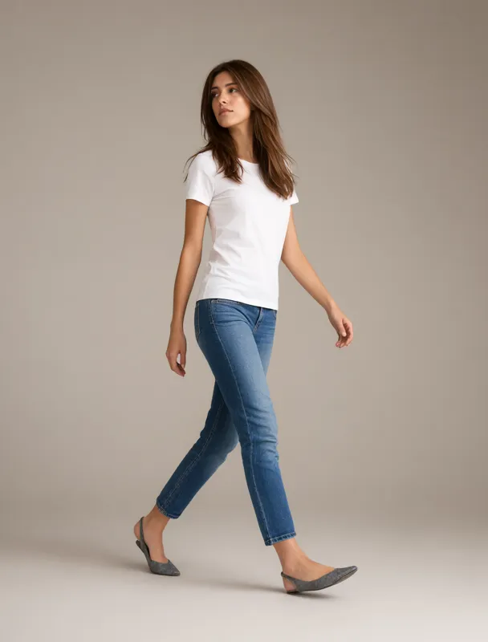
qwen image 2.1a full color full length fashion photograph in three-quarter view, with the whole body in frame from head to feet, lit by soft even studio light against a plain warm gray backdrop. the subject is a slim mixed race woman of about twenty five with light skin. her hair is chestnut brown, long blowout layers. she wears a plain white crew-neck t-shirt and blue jeans. she walks mid-stride. she gazes off to the left side of the frame, away from the camera.
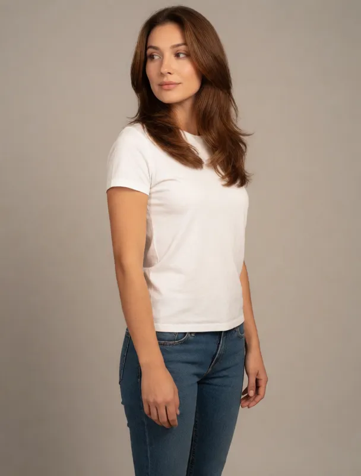
krea 2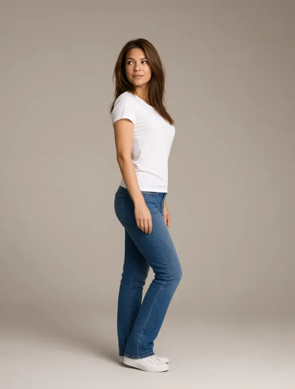
qwen image 2.1a full color full length fashion photograph in three-quarter view, with the whole body in frame from head to feet, lit by soft even studio light against a plain warm gray backdrop. the subject is a slim mixed race woman of about twenty five with light skin. her hair is chestnut brown, long blowout layers. she wears a plain white crew-neck t-shirt and blue jeans. she looks back over her shoulder. she gazes off to the left side of the frame, away from the camera.
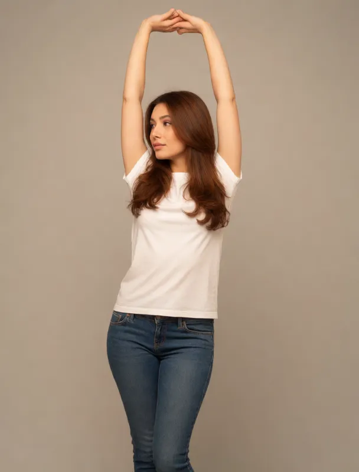
krea 2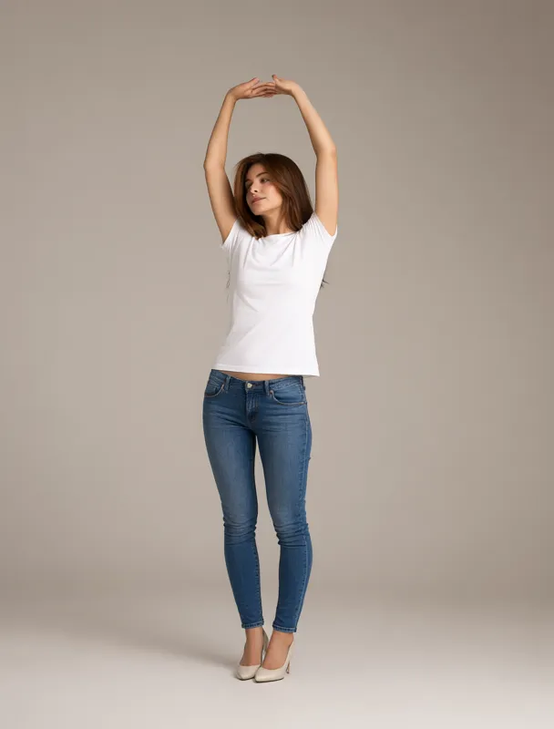
qwen image 2.1a full color full length fashion photograph in three-quarter view, with the whole body in frame from head to feet, lit by soft even studio light against a plain warm gray backdrop. the subject is a slim mixed race woman of about twenty five with light skin. her hair is chestnut brown, long blowout layers. she wears a plain white crew-neck t-shirt and blue jeans. she stretches with her arms raised overhead. she gazes off to the left side of the frame, away from the camera.
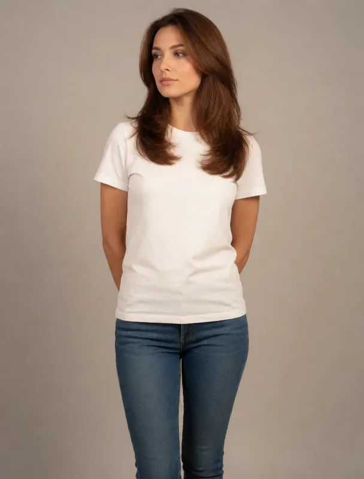
krea 2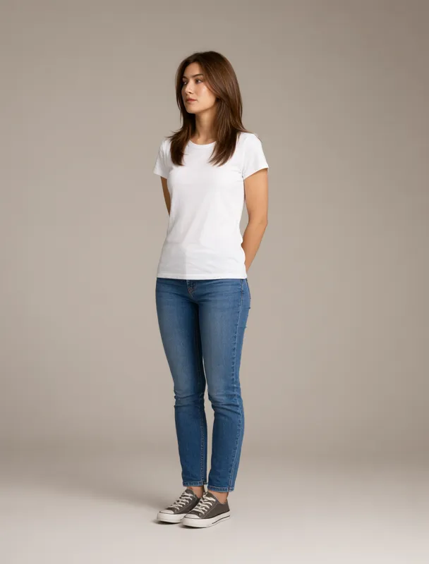
qwen image 2.1a full color full length fashion photograph in three-quarter view, with the whole body in frame from head to feet, lit by soft even studio light against a plain warm gray backdrop. the subject is a slim mixed race woman of about twenty five with light skin. her hair is chestnut brown, long blowout layers. she wears a plain white crew-neck t-shirt and blue jeans. she stands with her hands clasped behind her back. she gazes off to the left side of the frame, away from the camera.
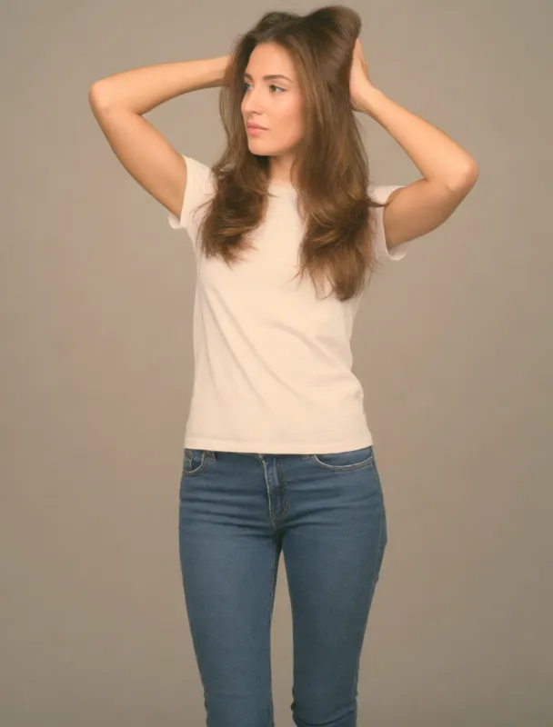
krea 2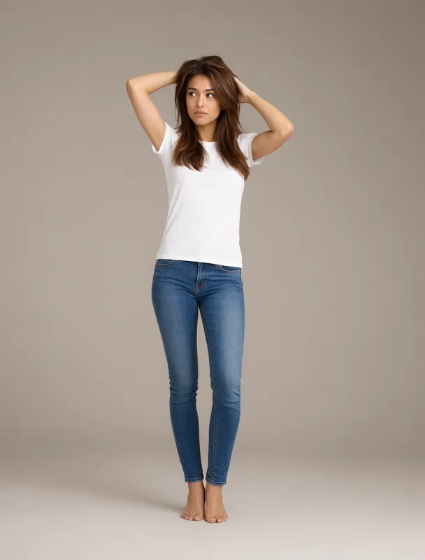
qwen image 2.1a full color full length fashion photograph in three-quarter view, with the whole body in frame from head to feet, lit by soft even studio light against a plain warm gray backdrop. the subject is a slim mixed race woman of about twenty five with light skin. her hair is chestnut brown, long blowout layers. she wears a plain white crew-neck t-shirt and blue jeans. she stands with both hands running through her hair. she gazes off to the left side of the frame, away from the camera.
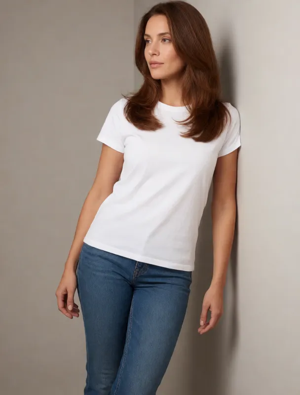
krea 2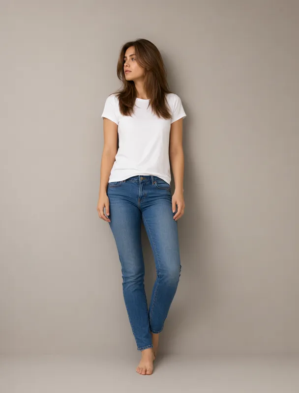
qwen image 2.1a full color full length fashion photograph in three-quarter view, with the whole body in frame from head to feet, lit by soft even studio light against a plain warm gray backdrop. the subject is a slim mixed race woman of about twenty five with light skin. her hair is chestnut brown, long blowout layers. she wears a plain white crew-neck t-shirt and blue jeans. she leans one shoulder against a wall. she gazes off to the left side of the frame, away from the camera.
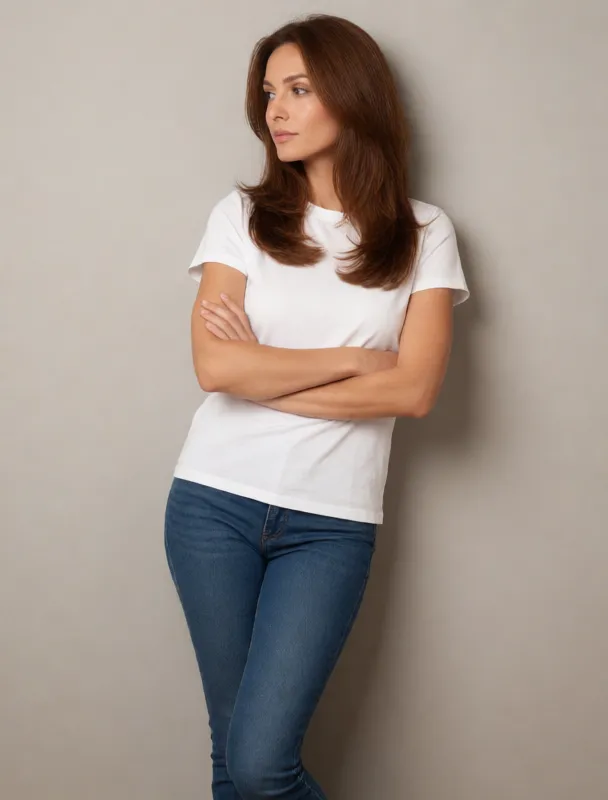
krea 2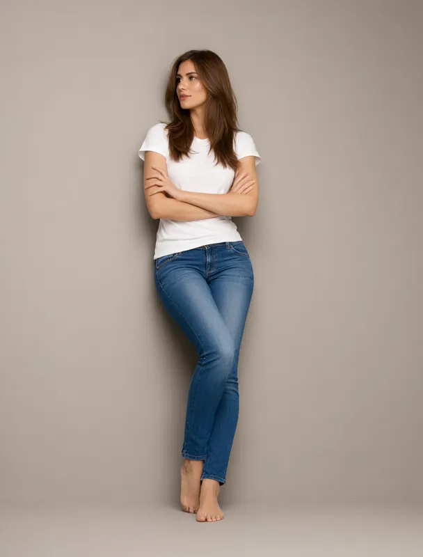
qwen image 2.1a full color full length fashion photograph in three-quarter view, with the whole body in frame from head to feet, lit by soft even studio light against a plain warm gray backdrop. the subject is a slim mixed race woman of about twenty five with light skin. her hair is chestnut brown, long blowout layers. she wears a plain white crew-neck t-shirt and blue jeans. she leans sideways against a wall with her arms crossed. she gazes off to the left side of the frame, away from the camera.
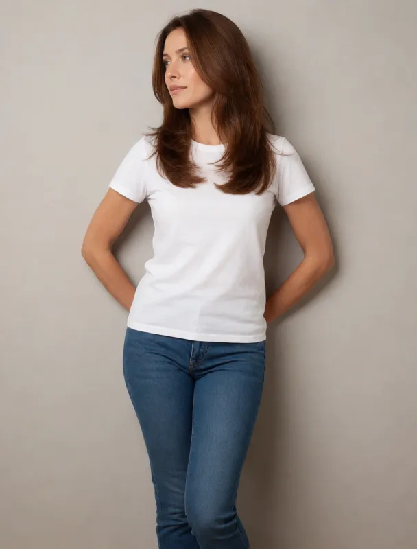
krea 2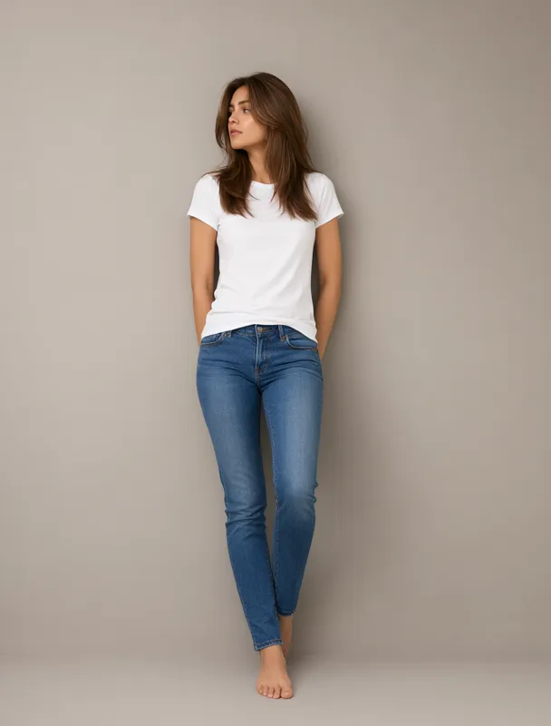
qwen image 2.1a full color full length fashion photograph in three-quarter view, with the whole body in frame from head to feet, lit by soft even studio light against a plain warm gray backdrop. the subject is a slim mixed race woman of about twenty five with light skin. her hair is chestnut brown, long blowout layers. she wears a plain white crew-neck t-shirt and blue jeans. she leans back against a wall with her hands tucked behind her. she gazes off to the left side of the frame, away from the camera.
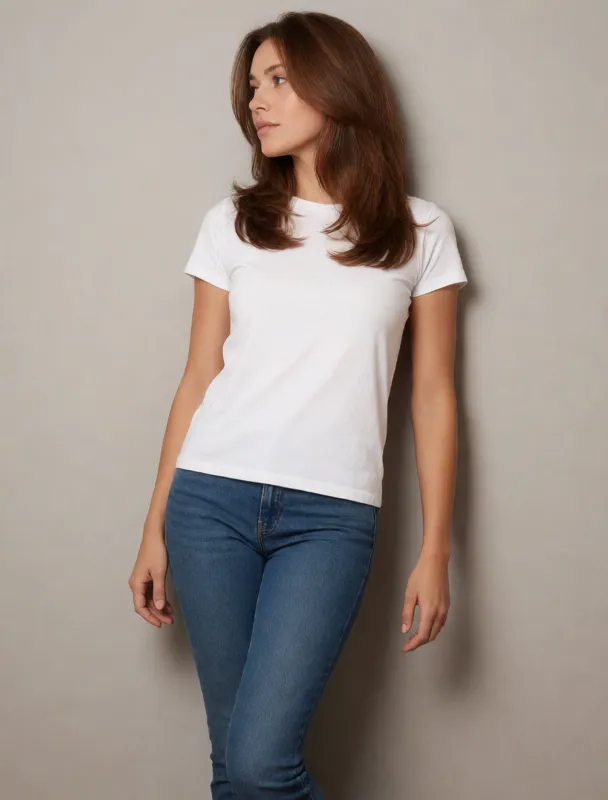
krea 2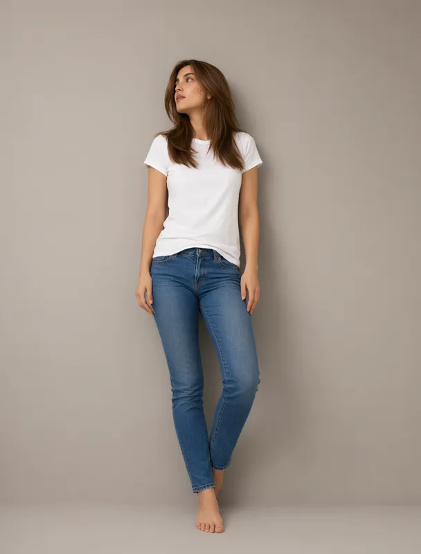
qwen image 2.1a full color full length fashion photograph in three-quarter view, with the whole body in frame from head to feet, lit by soft even studio light against a plain warm gray backdrop. the subject is a slim mixed race woman of about twenty five with light skin. her hair is chestnut brown, long blowout layers. she wears a plain white crew-neck t-shirt and blue jeans. she leans back against a wall with her head tipped back. she gazes off to the left side of the frame, away from the camera.
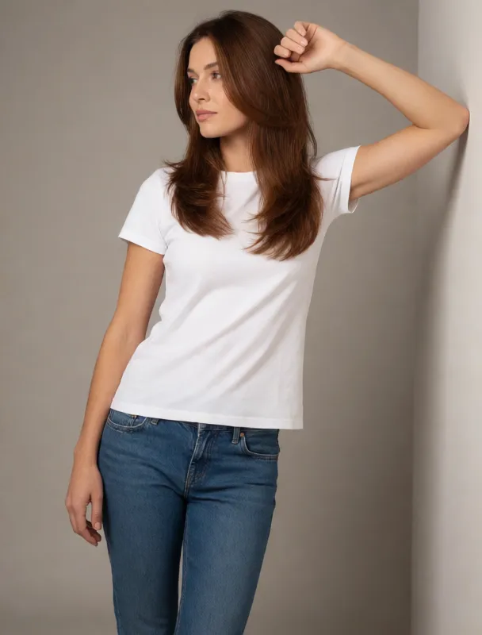
krea 2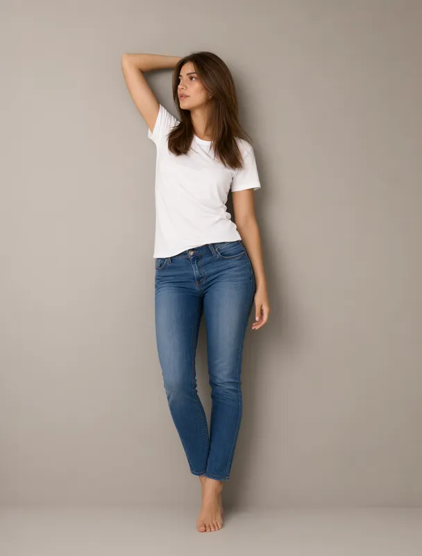
qwen image 2.1a full color full length fashion photograph in three-quarter view, with the whole body in frame from head to feet, lit by soft even studio light against a plain warm gray backdrop. the subject is a slim mixed race woman of about twenty five with light skin. her hair is chestnut brown, long blowout layers. she wears a plain white crew-neck t-shirt and blue jeans. she leans against a wall with one forearm resting above her head. she gazes off to the left side of the frame, away from the camera.
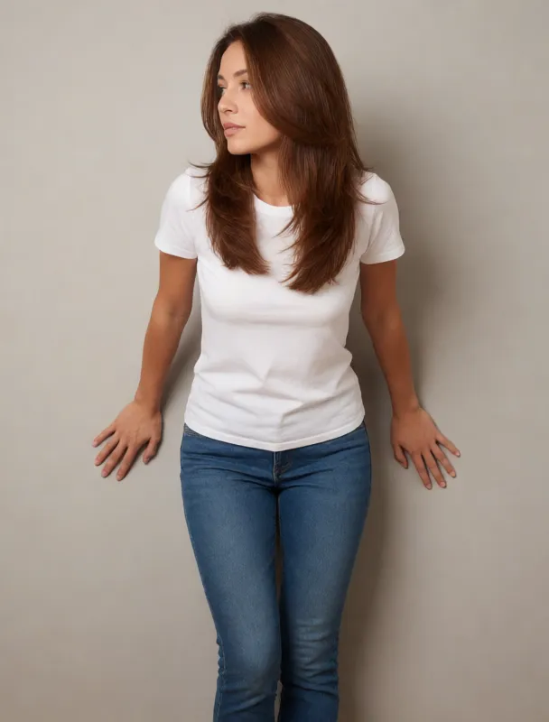
krea 2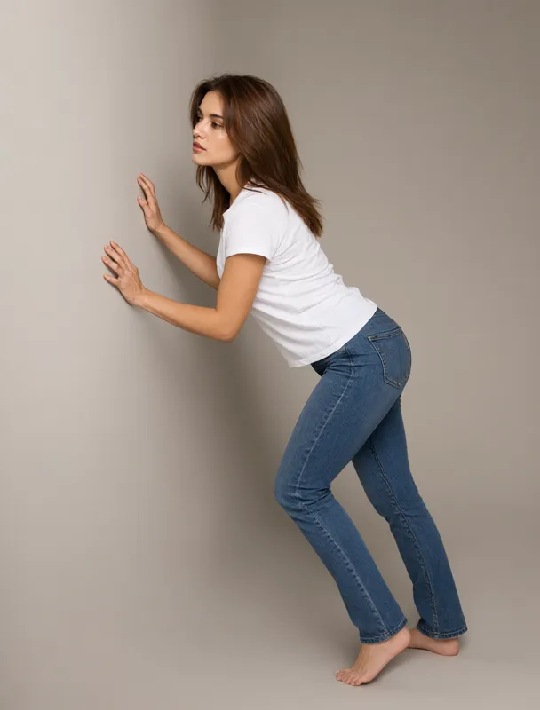
qwen image 2.1a full color full length fashion photograph in three-quarter view, with the whole body in frame from head to feet, lit by soft even studio light against a plain warm gray backdrop. the subject is a slim mixed race woman of about twenty five with light skin. her hair is chestnut brown, long blowout layers. she wears a plain white crew-neck t-shirt and blue jeans. she leans forward with both palms flat against a wall. she gazes off to the left side of the frame, away from the camera.
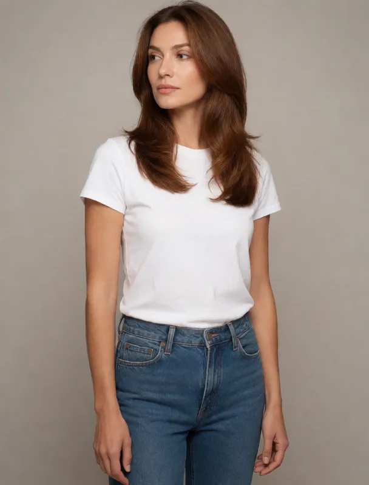
krea 2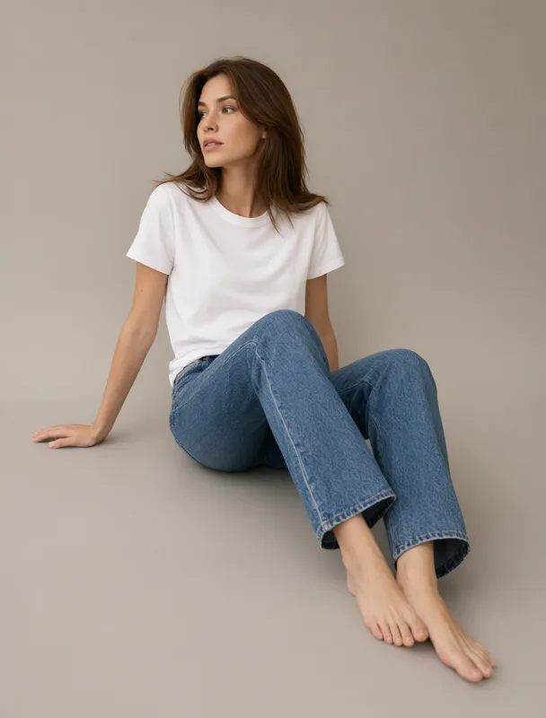
qwen image 2.1a full color full length fashion photograph in three-quarter view, with the whole body in frame from head to feet, lit by soft even studio light against a plain warm gray backdrop. the subject is a slim mixed race woman of about twenty five with light skin. her hair is chestnut brown, long blowout layers. she wears a plain white crew-neck t-shirt and blue jeans. she slides down a wall into a half sit. she gazes off to the left side of the frame, away from the camera.
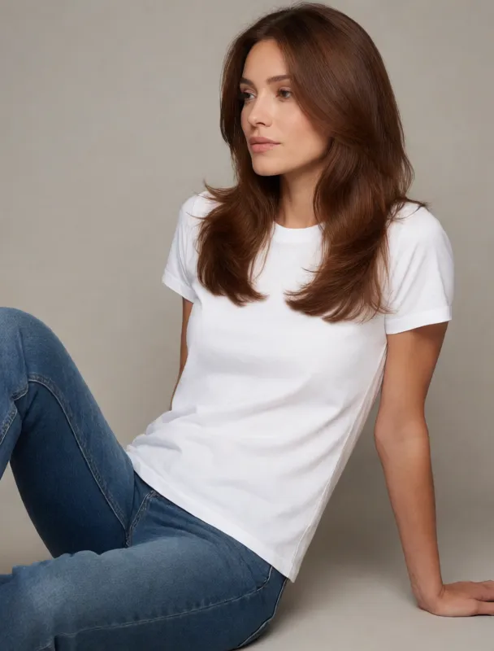
krea 2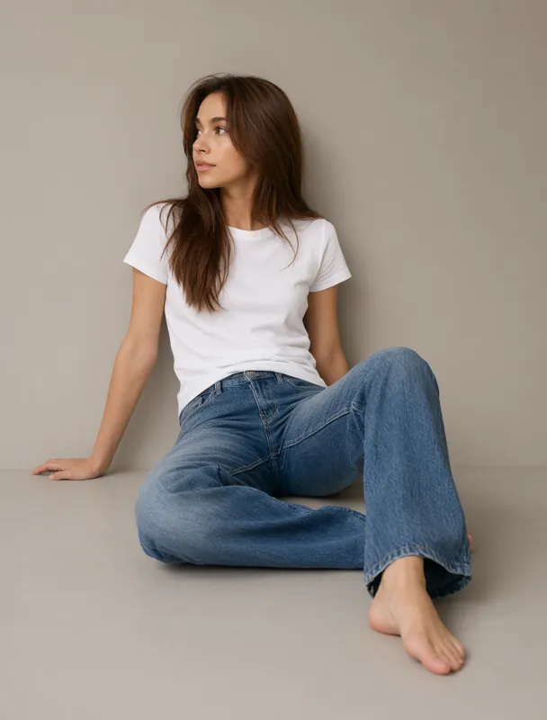
qwen image 2.1a full color full length fashion photograph in three-quarter view, with the whole body in frame from head to feet, lit by soft even studio light against a plain warm gray backdrop. the subject is a slim mixed race woman of about twenty five with light skin. her hair is chestnut brown, long blowout layers. she wears a plain white crew-neck t-shirt and blue jeans. she sits on the floor with her back against a wall. she gazes off to the left side of the frame, away from the camera.
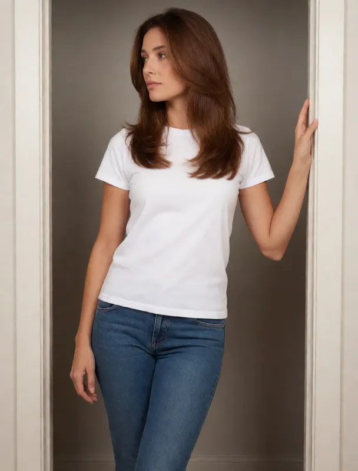
krea 2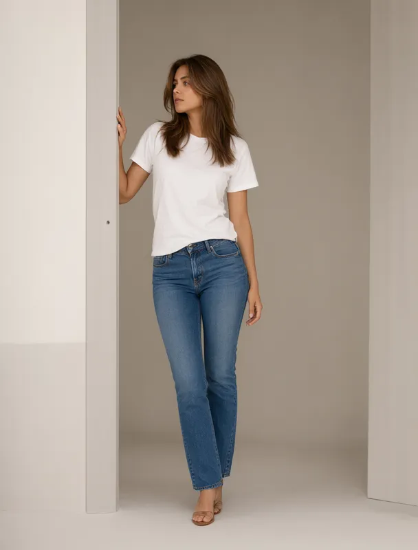
qwen image 2.1a full color full length fashion photograph in three-quarter view, with the whole body in frame from head to feet, lit by soft even studio light against a plain warm gray backdrop. the subject is a slim mixed race woman of about twenty five with light skin. her hair is chestnut brown, long blowout layers. she wears a plain white crew-neck t-shirt and blue jeans. she leans in a doorframe with one hand on the frame. she gazes off to the left side of the frame, away from the camera.
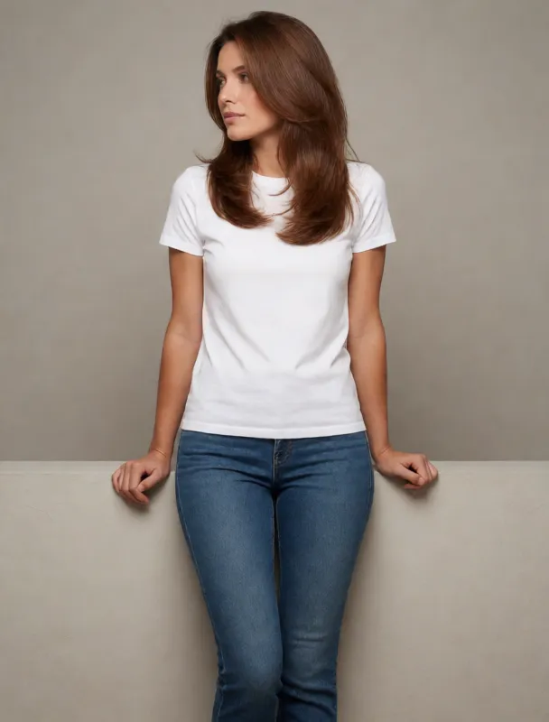
krea 2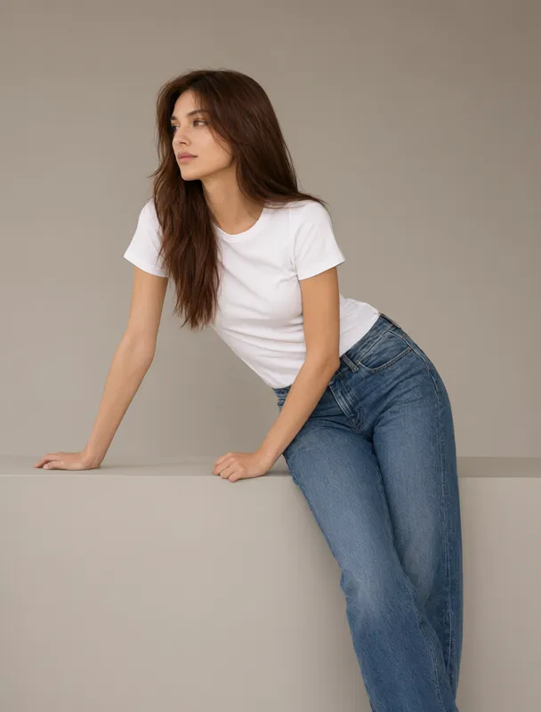
qwen image 2.1a full color full length fashion photograph in three-quarter view, with the whole body in frame from head to feet, lit by soft even studio light against a plain warm gray backdrop. the subject is a slim mixed race woman of about twenty five with light skin. her hair is chestnut brown, long blowout layers. she wears a plain white crew-neck t-shirt and blue jeans. she leans forward on a waist-high ledge on her forearms. she gazes off to the left side of the frame, away from the camera.
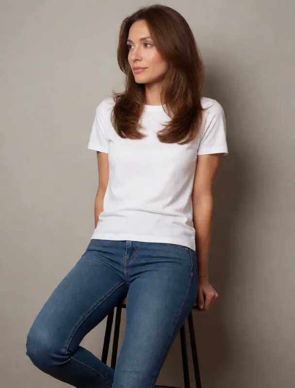
krea 2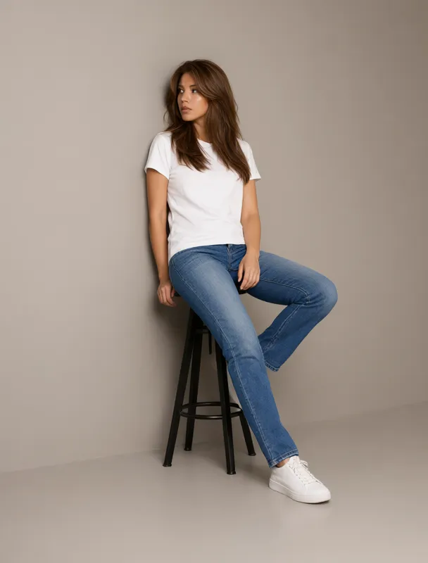
qwen image 2.1a full color full length fashion photograph in three-quarter view, with the whole body in frame from head to feet, lit by soft even studio light against a plain warm gray backdrop. the subject is a slim mixed race woman of about twenty five with light skin. her hair is chestnut brown, long blowout layers. she wears a plain white crew-neck t-shirt and blue jeans. she is perched on a tall stool leaning back against a wall. she gazes off to the left side of the frame, away from the camera.
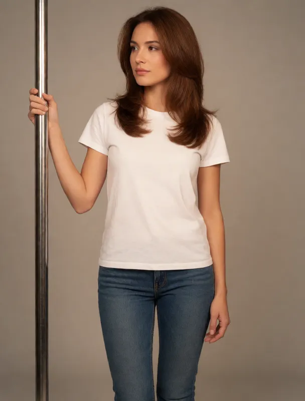
krea 2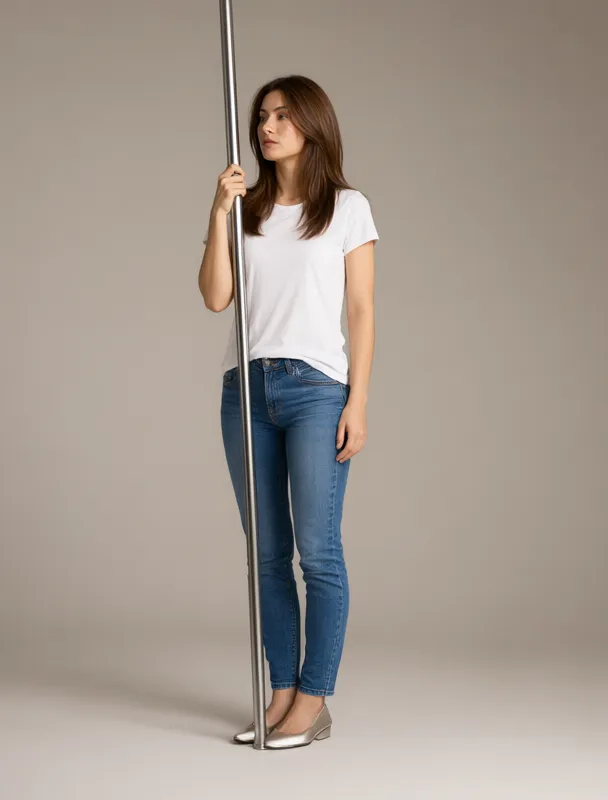
qwen image 2.1a full color full length fashion photograph in three-quarter view, with the whole body in frame from head to feet, lit by soft even studio light against a plain warm gray backdrop. the subject is a slim mixed race woman of about twenty five with light skin. her hair is chestnut brown, long blowout layers. she wears a plain white crew-neck t-shirt and blue jeans. she stands and grips a vertical metal pole at shoulder height with one hand. she gazes off to the left side of the frame, away from the camera.
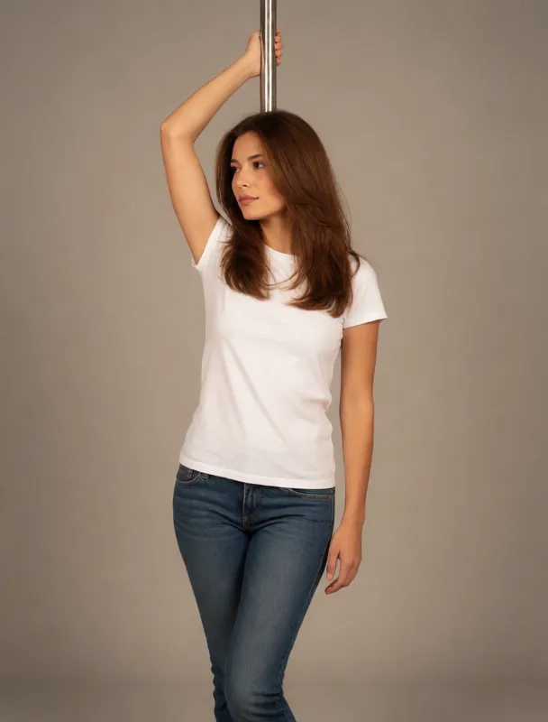
krea 2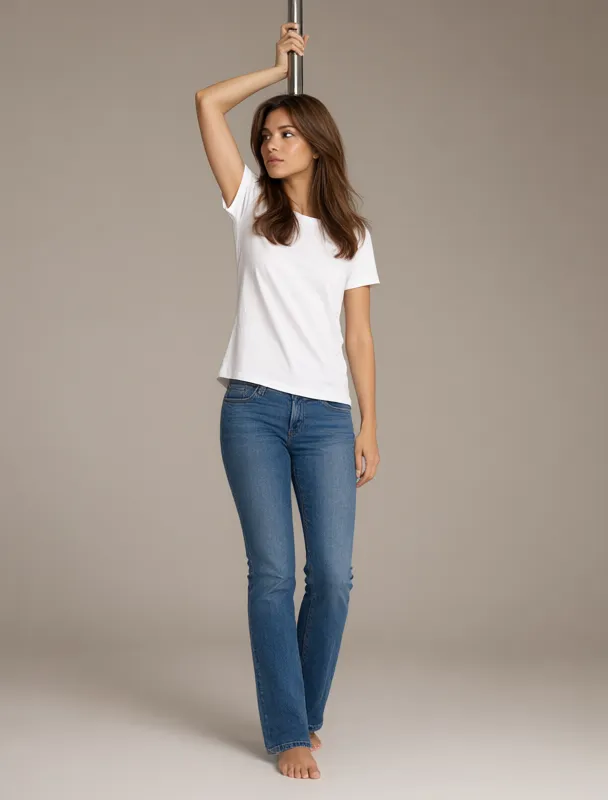
qwen image 2.1a full color full length fashion photograph in three-quarter view, with the whole body in frame from head to feet, lit by soft even studio light against a plain warm gray backdrop. the subject is a slim mixed race woman of about twenty five with light skin. her hair is chestnut brown, long blowout layers. she wears a plain white crew-neck t-shirt and blue jeans. she stands and grips a vertical metal pole above her head with one arm extended. she gazes off to the left side of the frame, away from the camera.
a full color full length fashion photograph in three-quarter view, with the whole body in frame from head to feet, lit by soft even studio light against a plain warm gray backdrop. the subject is a slim mixed race woman of about twenty five with light skin. her hair is chestnut brown, long blowout layers. she wears a plain white crew-neck t-shirt and blue jeans. she stands and holds an overhead hanging strap loop with one hand. she gazes off to the left side of the frame, away from the camera.
a full color full length fashion photograph in three-quarter view, with the whole body in frame from head to feet, lit by soft even studio light against a plain warm gray backdrop. the subject is a slim mixed race woman of about twenty five with light skin. her hair is chestnut brown, long blowout layers. she wears a plain white crew-neck t-shirt and blue jeans. she stands and holds an overhead horizontal bar with one hand. she gazes off to the left side of the frame, away from the camera.
a full color full length fashion photograph in three-quarter view, with the whole body in frame from head to feet, lit by soft even studio light against a plain warm gray backdrop. the subject is a slim mixed race woman of about twenty five with light skin. her hair is chestnut brown, long blowout layers. she wears a plain white crew-neck t-shirt and blue jeans. she stands and holds a waist-high horizontal railing with one hand. she gazes off to the left side of the frame, away from the camera.
a full color full length fashion photograph in three-quarter view, with the whole body in frame from head to feet, lit by soft even studio light against a plain warm gray backdrop. the subject is a slim mixed race woman of about twenty five with light skin. her hair is chestnut brown, long blowout layers. she wears a plain white crew-neck t-shirt and blue jeans. she stands and pulls a door handle with one arm extended. she gazes off to the left side of the frame, away from the camera.
a full color full length fashion photograph in three-quarter view, with the whole body in frame from head to feet, lit by soft even studio light against a plain warm gray backdrop. the subject is a slim mixed race woman of about twenty five with light skin. her hair is chestnut brown, long blowout layers. she wears a plain white crew-neck t-shirt and blue jeans. she leans out slightly while holding a vertical grab bar beside her with one hand. she gazes off to the left side of the frame, away from the camera.
a full color full length fashion photograph in three-quarter view, with the whole body in frame from head to feet, lit by soft even studio light against a plain warm gray backdrop. the subject is a slim mixed race woman of about twenty five with light skin. her hair is chestnut brown, long blowout layers. she wears a plain white crew-neck t-shirt and blue jeans. she reaches up with her arm fully stretched to hold a high handle. she gazes off to the left side of the frame, away from the camera.
a full color full length fashion photograph in three-quarter view, with the whole body in frame from head to feet, lit by soft even studio light against a plain warm gray backdrop. the subject is a slim mixed race woman of about twenty five with light skin. her hair is chestnut brown, long blowout layers. she wears a plain white crew-neck t-shirt and blue jeans. she stands and holds a ladder rung at head height with one hand. she gazes off to the left side of the frame, away from the camera.
a full color full length fashion photograph in three-quarter view, with the whole body in frame from head to feet, lit by soft even studio light against a plain warm gray backdrop. the subject is a slim mixed race woman of about twenty five with light skin. her hair is chestnut brown, long blowout layers. she wears a plain white crew-neck t-shirt and blue jeans. she swings out from a vertical metal pole, holding it with one straight arm. she gazes off to the left side of the frame, away from the camera.
a full color full length fashion photograph in three-quarter view, with the whole body in frame from head to feet, lit by soft even studio light against a plain warm gray backdrop. the subject is a slim mixed race woman of about twenty five with light skin. her hair is chestnut brown, long blowout layers. she wears a plain white crew-neck t-shirt and blue jeans. she stands and grips a vertical metal pole with both hands, one above the other. she gazes off to the left side of the frame, away from the camera.
a full color full length fashion photograph in three-quarter view, with the whole body in frame from head to feet, lit by soft even studio light against a plain warm gray backdrop. the subject is a slim mixed race woman of about twenty five with light skin. her hair is chestnut brown, long blowout layers. she wears a plain white crew-neck t-shirt and blue jeans. she stands and holds an overhead horizontal bar with both hands. she gazes off to the left side of the frame, away from the camera.
a full color full length fashion photograph in three-quarter view, with the whole body in frame from head to feet, lit by soft even studio light against a plain warm gray backdrop. the subject is a slim mixed race woman of about twenty five with light skin. her hair is chestnut brown, long blowout layers. she wears a plain white crew-neck t-shirt and blue jeans. she stands and holds two overhead hanging strap loops, one in each hand. she gazes off to the left side of the frame, away from the camera.
a full color full length fashion photograph in three-quarter view, with the whole body in frame from head to feet, lit by soft even studio light against a plain warm gray backdrop. the subject is a slim mixed race woman of about twenty five with light skin. her hair is chestnut brown, long blowout layers. she wears a plain white crew-neck t-shirt and blue jeans. she leans forward and holding a waist-high railing with both hands. she gazes off to the left side of the frame, away from the camera.
a full color full length fashion photograph in three-quarter view, with the whole body in frame from head to feet, lit by soft even studio light against a plain warm gray backdrop. the subject is a slim mixed race woman of about twenty five with light skin. her hair is chestnut brown, long blowout layers. she wears a plain white crew-neck t-shirt and blue jeans. she leans back against a waist-high railing, holding it behind her with both hands. she gazes off to the left side of the frame, away from the camera.
a full color full length fashion photograph in three-quarter view, with the whole body in frame from head to feet, lit by soft even studio light against a plain warm gray backdrop. the subject is a slim mixed race woman of about twenty five with light skin. her hair is chestnut brown, long blowout layers. she wears a plain white crew-neck t-shirt and blue jeans. she hangs from an overhead bar by both hands with her feet off the ground. she gazes off to the left side of the frame, away from the camera.
a full color full length fashion photograph in three-quarter view, with the whole body in frame from head to feet, lit by soft even studio light against a plain warm gray backdrop. the subject is a slim mixed race woman of about twenty five with light skin. her hair is chestnut brown, long blowout layers. she wears a plain white crew-neck t-shirt and blue jeans. she stands and holds a ladder rung with both hands. she gazes off to the left side of the frame, away from the camera.
a full color full length fashion photograph in three-quarter view, with the whole body in frame from head to feet, lit by soft even studio light against a plain warm gray backdrop. the subject is a slim mixed race woman of about twenty five with light skin. her hair is chestnut brown, long blowout layers. she wears a plain white crew-neck t-shirt and blue jeans. she pulls a heavy door handle with both hands. she gazes off to the left side of the frame, away from the camera.
a full color full length fashion photograph in three-quarter view, with the whole body in frame from head to feet, lit by soft even studio light against a plain warm gray backdrop. the subject is a slim mixed race woman of about twenty five with light skin. her hair is chestnut brown, long blowout layers. she wears a plain white crew-neck t-shirt and blue jeans. she stands between two vertical metal poles, holding one in each hand. she gazes off to the left side of the frame, away from the camera.
a full color full length fashion photograph in three-quarter view, with the whole body in frame from head to feet, lit by soft even studio light against a plain warm gray backdrop. the subject is a slim mixed race woman of about twenty five with light skin. her hair is chestnut brown, long blowout layers. she wears a plain white crew-neck t-shirt and blue jeans. she leans back away from a vertical metal pole with both hands gripping it and arms straight. she gazes off to the left side of the frame, away from the camera.
a full color full length fashion photograph in three-quarter view, with the whole body in frame from head to feet, lit by soft even studio light against a plain warm gray backdrop. the subject is a slim mixed race woman of about twenty five with light skin. her hair is chestnut brown, long blowout layers. she wears a plain white crew-neck t-shirt and blue jeans. she sits upright on a stool. she gazes off to the left side of the frame, away from the camera.
a full color full length fashion photograph in three-quarter view, with the whole body in frame from head to feet, lit by soft even studio light against a plain warm gray backdrop. the subject is a slim mixed race woman of about twenty five with light skin. her hair is chestnut brown, long blowout layers. she wears a plain white crew-neck t-shirt and blue jeans. she is perched on the edge of a stool with one foot on the rung. she gazes off to the left side of the frame, away from the camera.
a full color full length fashion photograph in three-quarter view, with the whole body in frame from head to feet, lit by soft even studio light against a plain warm gray backdrop. the subject is a slim mixed race woman of about twenty five with light skin. her hair is chestnut brown, long blowout layers. she wears a plain white crew-neck t-shirt and blue jeans. she sits on a chair with her legs crossed. she gazes off to the left side of the frame, away from the camera.
a full color full length fashion photograph in three-quarter view, with the whole body in frame from head to feet, lit by soft even studio light against a plain warm gray backdrop. the subject is a slim mixed race woman of about twenty five with light skin. her hair is chestnut brown, long blowout layers. she wears a plain white crew-neck t-shirt and blue jeans. she sits on a chair leaning forward with her elbows on her knees. she gazes off to the left side of the frame, away from the camera.
a full color full length fashion photograph in three-quarter view, with the whole body in frame from head to feet, lit by soft even studio light against a plain warm gray backdrop. the subject is a slim mixed race woman of about twenty five with light skin. her hair is chestnut brown, long blowout layers. she wears a plain white crew-neck t-shirt and blue jeans. she sits backwards on a chair with her arms folded on the backrest. she gazes off to the left side of the frame, away from the camera.
a full color full length fashion photograph in three-quarter view, with the whole body in frame from head to feet, lit by soft even studio light against a plain warm gray backdrop. the subject is a slim mixed race woman of about twenty five with light skin. her hair is chestnut brown, long blowout layers. she wears a plain white crew-neck t-shirt and blue jeans. she sits cross-legged on the floor. she gazes off to the left side of the frame, away from the camera.
a full color full length fashion photograph in three-quarter view, with the whole body in frame from head to feet, lit by soft even studio light against a plain warm gray backdrop. the subject is a slim mixed race woman of about twenty five with light skin. her hair is chestnut brown, long blowout layers. she wears a plain white crew-neck t-shirt and blue jeans. she sits on the floor hugging her knees to her chest. she gazes off to the left side of the frame, away from the camera.
a full color full length fashion photograph in three-quarter view, with the whole body in frame from head to feet, lit by soft even studio light against a plain warm gray backdrop. the subject is a slim mixed race woman of about twenty five with light skin. her hair is chestnut brown, long blowout layers. she wears a plain white crew-neck t-shirt and blue jeans. she sits on the floor with her legs out, leaning back on her hands. she gazes off to the left side of the frame, away from the camera.
a full color full length fashion photograph in three-quarter view, with the whole body in frame from head to feet, lit by soft even studio light against a plain warm gray backdrop. the subject is a slim mixed race woman of about twenty five with light skin. her hair is chestnut brown, long blowout layers. she wears a plain white crew-neck t-shirt and blue jeans. she sits on the floor with her legs tucked to one side. she gazes off to the left side of the frame, away from the camera.
a full color full length fashion photograph in three-quarter view, with the whole body in frame from head to feet, lit by soft even studio light against a plain warm gray backdrop. the subject is a slim mixed race woman of about twenty five with light skin. her hair is chestnut brown, long blowout layers. she wears a plain white crew-neck t-shirt and blue jeans. she sits on the floor with one knee up and an arm resting on it. she gazes off to the left side of the frame, away from the camera.
a full color full length fashion photograph in three-quarter view, with the whole body in frame from head to feet, lit by soft even studio light against a plain warm gray backdrop. the subject is a slim mixed race woman of about twenty five with light skin. her hair is chestnut brown, long blowout layers. she wears a plain white crew-neck t-shirt and blue jeans. she kneels and sits back on her heels. she gazes off to the left side of the frame, away from the camera.
a full color full length fashion photograph in three-quarter view, with the whole body in frame from head to feet, lit by soft even studio light against a plain warm gray backdrop. the subject is a slim mixed race woman of about twenty five with light skin. her hair is chestnut brown, long blowout layers. she wears a plain white crew-neck t-shirt and blue jeans. she is in a deep squat with her heels flat on the floor. she gazes off to the left side of the frame, away from the camera.
a full color full length fashion photograph in three-quarter view, with the whole body in frame from head to feet, lit by soft even studio light against a plain warm gray backdrop. the subject is a slim mixed race woman of about twenty five with light skin. her hair is chestnut brown, long blowout layers. she wears a plain white crew-neck t-shirt and blue jeans. she squats on the balls of her feet with her heels raised. she gazes off to the left side of the frame, away from the camera.
a full color full length fashion photograph in three-quarter view, with the whole body in frame from head to feet, lit by soft even studio light against a plain warm gray backdrop. the subject is a slim mixed race woman of about twenty five with light skin. her hair is chestnut brown, long blowout layers. she wears a plain white crew-neck t-shirt and blue jeans. she squats with her forearms resting on her knees. she gazes off to the left side of the frame, away from the camera.
a full color full length fashion photograph in three-quarter view, with the whole body in frame from head to feet, lit by soft even studio light against a plain warm gray backdrop. the subject is a slim mixed race woman of about twenty five with light skin. her hair is chestnut brown, long blowout layers. she wears a plain white crew-neck t-shirt and blue jeans. she squats with her hands clasped between her knees. she gazes off to the left side of the frame, away from the camera.
a full color full length fashion photograph in three-quarter view, with the whole body in frame from head to feet, lit by soft even studio light against a plain warm gray backdrop. the subject is a slim mixed race woman of about twenty five with light skin. her hair is chestnut brown, long blowout layers. she wears a plain white crew-neck t-shirt and blue jeans. she is in a wide sumo squat. she gazes off to the left side of the frame, away from the camera.
a full color full length fashion photograph in three-quarter view, with the whole body in frame from head to feet, lit by soft even studio light against a plain warm gray backdrop. the subject is a slim mixed race woman of about twenty five with light skin. her hair is chestnut brown, long blowout layers. she wears a plain white crew-neck t-shirt and blue jeans. she is in a half squat with her hands on her thighs. she gazes off to the left side of the frame, away from the camera.
a full color full length fashion photograph in three-quarter view, with the whole body in frame from head to feet, lit by soft even studio light against a plain warm gray backdrop. the subject is a slim mixed race woman of about twenty five with light skin. her hair is chestnut brown, long blowout layers. she wears a plain white crew-neck t-shirt and blue jeans. she is in a low crouch with one hand touching the floor. she gazes off to the left side of the frame, away from the camera.
a full color full length fashion photograph in three-quarter view, with the whole body in frame from head to feet, lit by soft even studio light against a plain warm gray backdrop. the subject is a slim mixed race woman of about twenty five with light skin. her hair is chestnut brown, long blowout layers. she wears a plain white crew-neck t-shirt and blue jeans. she kneels on one knee. she gazes off to the left side of the frame, away from the camera.
a full color fashion photograph shot from directly overhead looking straight down, with the whole body in frame from head to feet, lit by soft even studio light against a plain light gray floor. the subject is a slim mixed race woman of about twenty five with light skin. her hair is chestnut brown, long blowout layers. she wears a plain white crew-neck t-shirt and blue jeans. she lies on her back with her arms above her head. she gazes off to the left side of the frame, away from the camera.
a full color fashion photograph shot from directly overhead looking straight down, with the whole body in frame from head to feet, lit by soft even studio light against a plain light gray floor. the subject is a slim mixed race woman of about twenty five with light skin. her hair is chestnut brown, long blowout layers. she wears a plain white crew-neck t-shirt and blue jeans. she lies on her back with her knees bent. she gazes off to the left side of the frame, away from the camera.
a full color fashion photograph shot from directly overhead looking straight down, with the whole body in frame from head to feet, lit by soft even studio light against a plain light gray floor. the subject is a slim mixed race woman of about twenty five with light skin. her hair is chestnut brown, long blowout layers. she wears a plain white crew-neck t-shirt and blue jeans. she lies on her side with her head propped on one hand. she gazes off to the left side of the frame, away from the camera.
a full color fashion photograph shot from directly overhead looking straight down, with the whole body in frame from head to feet, lit by soft even studio light against a plain light gray floor. the subject is a slim mixed race woman of about twenty five with light skin. her hair is chestnut brown, long blowout layers. she wears a plain white crew-neck t-shirt and blue jeans. she lies on her stomach propped on her elbows with her feet kicked up. she gazes off to the left side of the frame, away from the camera.
a full color fashion photograph shot from directly overhead looking straight down, with the whole body in frame from head to feet, lit by soft even studio light against a plain light gray floor. the subject is a slim mixed race woman of about twenty five with light skin. her hair is chestnut brown, long blowout layers. she wears a plain white crew-neck t-shirt and blue jeans. she lies on her stomach with her cheek resting on her folded arms. she gazes off to the left side of the frame, away from the camera.
a full color fashion photograph shot from directly overhead looking straight down, with the whole body in frame from head to feet, lit by soft even studio light against a plain light gray floor. the subject is a slim mixed race woman of about twenty five with light skin. her hair is chestnut brown, long blowout layers. she wears a plain white crew-neck t-shirt and blue jeans. she is curled up on her side. she gazes off to the left side of the frame, away from the camera.